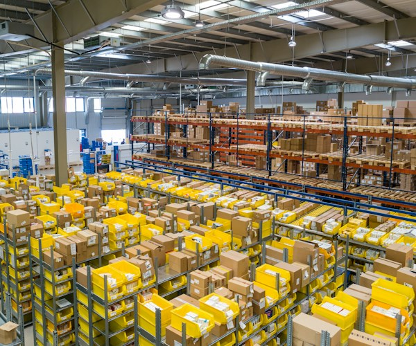

Asset Management - Protect Every Asset
Track, monitor, and protect your physical and digital assets with real-time visibility. Know exactly where every asset is, who has it, and its current state — at all times.

What Is Asset Management?
Asset Management is the systematic process of deploying, operating, maintaining, upgrading, and disposing of assets cost-effectively — with complete visibility and control over every item.
Know What You Own
Complete inventory of every physical and digital asset.
Know Where It Is
Real-time location tracking with GPS, RFID, and barcode.
Know Its Condition
Track health, maintenance history, and lifecycle stage.
What You Get
Real-Time Asset Tracking
See where every asset is at any moment with GPS, RFID, and barcodes.
Lifecycle Management
Manage every stage — from acquisition to disposal.
Maintenance Scheduling
Prevent breakdowns with proactive maintenance alerts.
Geofencing & Alerts
Get notified when assets move outside designated areas.
Depreciation Tracking
Auto-calculate depreciation for accurate financial reporting.
Audit & Compliance
Generate audit-ready reports in seconds, not days.
Why Choose Asset Management
Reduce Asset Loss
Cut theft and loss by up to 70% with real-time tracking.
Optimize Utilization
Improve asset utilization by 40% by knowing what's available.
Lower Maintenance Costs
Reduce maintenance spend with preventive scheduling.
Faster Audits
Complete audits in hours instead of weeks.
Frequently Asked Questions About Asset Management
Quick answers about real-time tracking, lifecycle management, depreciation, and compliance.
What is asset management software?
Asset management software tracks, monitors, and manages every physical and digital asset across its lifecycle — from acquisition to disposal. It provides real-time location via GPS, RFID, or barcode, records maintenance history, tracks depreciation, and generates audit-ready reports.
How does real-time asset tracking work?
Real-time tracking uses GPS, RFID, or barcode tags attached to each asset. The software continuously records location, status, and condition, and displays it on a live dashboard. Geofencing alerts notify you immediately if an asset leaves a designated area or is used outside approved conditions.
Can the platform track both physical and digital assets?
Yes. The platform supports physical assets (equipment, vehicles, tools, inventory) and digital assets (software licenses, certificates, contracts, data sets). Both are managed through the same lifecycle, with unified reporting and compliance tracking.
How does asset management reduce losses and theft?
Asset management reduces loss by tracking every asset in real time, alerting on unauthorized movement via geofencing, enforcing check-in and check-out workflows, and keeping a complete audit trail. Organizations typically cut asset loss and theft by up to 70%.
Does the platform handle depreciation and compliance reporting?
Yes. The platform calculates depreciation automatically using standard methods (straight-line, declining balance, and others), and generates depreciation schedules for financial reporting. Audit reports, compliance summaries, and asset registers can be produced in minutes.
Can asset management integrate with ERP and maintenance systems?
Yes. The platform integrates with ERP systems for financial data, CMMS for maintenance workflows, and procurement systems for asset acquisition. Standard APIs support SAP, Oracle, Dynamics, and most major enterprise systems.
Ready to Take Control of Your Assets?
Let's discuss how Asset Management can give you complete visibility and control.